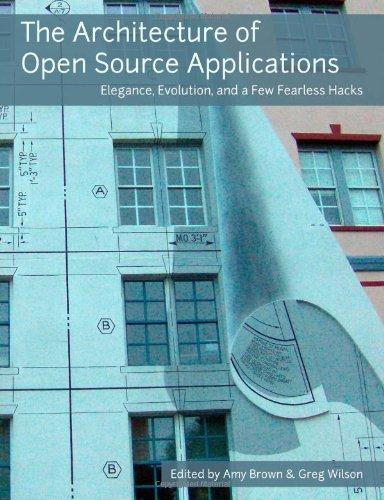
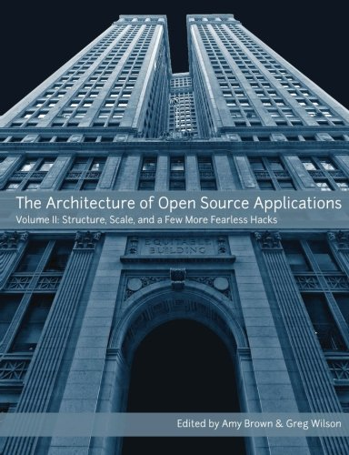
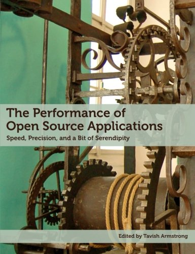

Let's show scientists how we test our software so that they'll know how to test theirs.
|  |  |  |
"Write a web server in 500 lines or less to show novice programmers how real ones work."
http://tinyurl.com/swc-testing-post (inspired by Lorena Barba)
- We don't know what tests to write in different domains
- We don't know what tolerances to use in those tests
Steve Eddins: if more than 1% of pixels have changed by more than the low bit in any channel after a refactoring, start looking for the bug.
- Describe the problem
- Write a simple solution
- Test it (and explain your choices)
- Add and test one complexity
- Sum up
- Explain unit testing (we'll do that)
- Explain floating point (ditto)
- Use math that your colleagues have to look up
- Public repository on GitHub
- Use any format you want
- We do copy editing and production
- Everything CC-BY
- It'll be fun
- People really want guidance
- We can deliver your answers
- It's something concrete this group can do
gvwilson@software-carpentry.org
Thank You
/